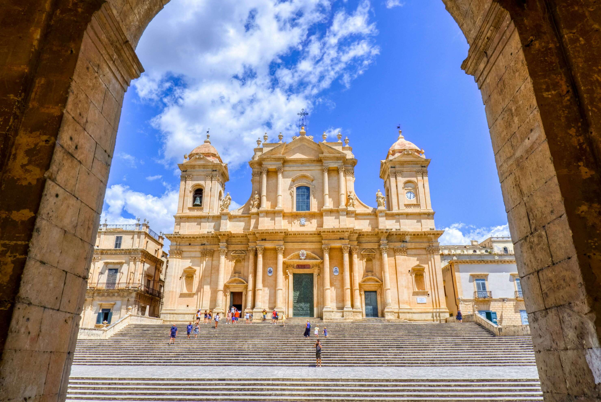

info e orari
Pianifica la tua Visita
Tutte le informazioni necessarie per scoprire i tesori del Museo Diocesano di Noto: orari, biglietti e percorsi guidati.
Visite guidate
Scegli la tipologia più adatta alle tue esigenze
Biglietto signolo
5€
Accesso completo a tutte le sale
- Tutte le 6 sale
- Audioguida inclusa
- Bookshop sconto 10%
Biglietto ridotto
2.50€
Studenti e over 65
- Tutte le 6 sale
- Audioguida inclusa
- Bookshop sconto 10%
Biglietto Famiglia
18€
2 adulti + fino a 3 bambini
- Tutte le 6 sale
- Audioguida incluso
- Kit didattico per bambini
Visita guidata
12€
Tour completo con guida esperta
- Guida in italiano/inglese
- Approfondimenti esclusivi
- Massimo 25 persone
Visita serale
12€
Esperienza suggestiva del museo diocesano
- Visita guidata in orario serale
- Racconto spirituale delle opere
- Esperienza immersiva e suggestiva
Visita breve
3.50€
Tour essenziale con panoramica completa
- Opere principali
- Introduzione arte sacra
- Orientamento alla visita autonoma
Ingresso gratuito
Bambini sotto i sei anni, guide turistiche, giornalisti accreditati, disabili con accompagnatore, prima domenica del mese
Come raggiungere il museo
In auto
Parcheggio gratuito disponibile in Viale Marconi (10 min. a piedi dal museo)
In treno
Stazione di Noto sulla linea Siracusa-Ragusa. Bus navetta per il centro storico ogni 30 min.
Accessibilità
Il museo è accessibile alle persone con disabilità motoria. Ascensore disponibile. Visite tattili su prenotazione
Chiusure straordinarie
25 Dicembre-Natale, 1 Gennaio-Capodanno, Domenica di pasqua
